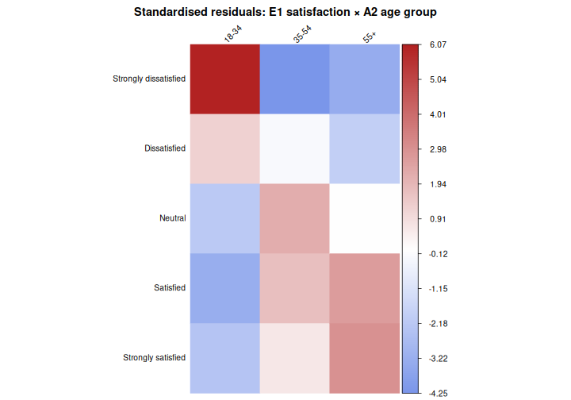

Quantitative Data Analysis in R
Last updated on 2026-05-11 | Edit this page
Overview
Questions
- What statistical tests should I use?
- How can I run multiple tests at once?
Objectives
- Read in data and ensure variables have the correct data type
- Perform exploratory data analysis
- Identify the correct statistical test for a given variable type and research question
- Run
Chi-square tests,t-tests, andone-way ANOVAsinRNotebooks - Interpret p-values, test statistics, and effect sizes in context
- Write clear explanatory text in
R Notebooksto document analytical decisions - Recognise the assumptions underlying each test and check them in
R
Other materials
Dataset Overview
This workshop uses a generated (made-up) dataset containing 1005 responses to a survey on flexible working and work-life balance, with a number of different data types.
The schema is included in the following table.
Flexible working and work-life balance survey data schema
| Section | Variable | Type | Description |
|---|---|---|---|
| A (Demographics) | A1 – Gender | Factor (male, female) | What is your gender? |
| A2 – Age Group | Ordered Factor (18–34, 35–54, 55+) | What is your age? | |
| A3 – Education | Ordered Factor (primary, secondary, tertiary+) | What is your highest level of education? | |
| A4 – Income | Ordered Factor (low, middle, high) | What is your annual income? | |
| A5 – Region | Factor (region 1, 2, 3) | What is your region of residence? | |
| A6 – Area Type | Factor (rural, urban) | Is your region of residence urban or rural? | |
| B (Policy Views) | B1 | Character | What should be the main goal of flexible working policies? (Select up to 3) |
| B1_1 | Logical | Improve employee wellbeing & work-life balance | |
| B1_2 | Logical | Boost productivity & business performance | |
| B1_3 | Logical | Attract & retain top talent | |
| B1_4 | Logical | Reduce costs & office overhead | |
| B1_5 | Logical | Support diversity, equity & inclusion | |
| B2 | Character | Who should benefit most from flexible working arrangements? (Select up to 3) | |
| B2_1 | Logical | All employees equally, regardless of role or seniority | |
| B2_2 | Logical | Parents and caregivers with dependants | |
| B2_3 | Logical | Employees with disabilities or chronic health conditions | |
| B2_4 | Logical | Junior/entry-level employees building their careers | |
| B2_5 | Logical | Senior/experienced employees with proven track records | |
| B2_6 | Logical | Employees with long commutes or remote locations | |
| B2_7 | Logical | Employees from underrepresented or marginalised groups | |
| B2_8 | Logical | High performers and those meeting targets consistently | |
| C (Satisfaction) | C1 | Integer (1–5) | How satisfied are you with your current flexible working arrangements? (1 = least satisfied, 5 = most satisfied) |
| C2 | Integer (1–5) | To what extent do flexible working options improve your work-life balance? (1 = very little, 5 = very much) | |
| C3 | Integer (1–5) | How strongly do you agree that your employer supports flexible working in practice? (1 = very little, 5 = very much) | |
| D (Commute) | D1 | Numeric | What is your commute time to work in minutes? |
| D2 | Numeric | What is your commute distance in km? | |
| E (Outcomes) | E1 | Ordered Factor (strongly dissatisfied → strongly satisfied) | How satisfied are you with your current work-life balance? |
| E2 | Free text | What makes you most satisfied in your personal life? |
Set up
Start by opening up your RStudio project that you
created in a previous
workshop, called intro_r, in a new session. Ensure your
global environment is empty! You can also ‘sweep’ your
global environment by clicking the broom
icon.

Open a new R Notebook:
Click File -> New File -> R Notebook. Save your
R Notebook with a filename that makes sense, such as
quantitative_analysis.Rmd, in the scripts
folder.
When you open a new R Notebook, some explanatory text is
provided. This can be deleted so you can enter your own text and
code.
Load packages and download data
Download packages (if needed) and load libraries. We’ll be using the
gtsummary package for the first time, so this will need to
be installed.
R
for (pkg in c("tidyverse", "here", "gtsummary", "scales", "corrplot", "epitools", "rcompanion")) {
if (!requireNamespace(pkg, quietly = TRUE)) install.packages(pkg)
}
OUTPUT
- Querying repositories for available source packages ... Done!
The following package(s) will be installed:
- bigD [0.3.1]
- bitops [1.0-9]
- cards [0.7.1]
- cardx [0.3.2]
- gt [1.3.0]
- gtsummary [2.5.0]
- juicyjuice [0.1.0]
- reactable [0.4.5]
- reactR [0.6.1]
These packages will be installed into "/__w/irim-r-workshops/irim-r-workshops/renv/profiles/lesson-requirements/renv/library/linux-ubuntu-noble/R-4.5/x86_64-pc-linux-gnu".
# Downloading packages -------------------------------------------------------
[32m✔[0m bitops 1.0-9 [11 kB in 0.24s]
[32m✔[0m reactR 0.6.1 [712 kB in 0.32s]
[32m✔[0m reactable 0.4.5 [981 kB in 0.33s]
[32m✔[0m bigD 0.3.1 [1.3 MB in 0.34s]
[32m✔[0m juicyjuice 0.1.0 [1.1 MB in 0.34s]
[32m✔[0m cardx 0.3.2 [200 kB in 0.36s]
[32m✔[0m gt 1.3.0 [3.4 MB in 0.38s]
[32m✔[0m gtsummary 2.5.0 [935 kB in 0.4s]
[32m✔[0m cards 0.7.1 [321 kB in 0.43s]
Successfully downloaded 9 packages in 0.71 seconds.
# Installing packages --------------------------------------------------------
[32m✔[0m juicyjuice 0.1.0 [built from source in 5.3s]
[32m✔[0m bitops 1.0-9 [built from source in 7.2s]
[32m✔[0m reactR 0.6.1 [built from source in 5.1s]
[32m✔[0m reactable 0.4.5 [built from source in 7.2s]
[32m✔[0m cards 0.7.1 [built from source in 20s]
[32m✔[0m bigD 0.3.1 [built from source in 26s]
[32m✔[0m cardx 0.3.2 [built from source in 9.5s]
[32m✔[0m gt 1.3.0 [built from source in 19s]
[32m✔[0m gtsummary 2.5.0 [built from source in 9.2s]
Successfully installed 9 packages in 55 seconds.
The following package(s) will be installed:
- corrplot [0.95]
These packages will be installed into "/__w/irim-r-workshops/irim-r-workshops/renv/profiles/lesson-requirements/renv/library/linux-ubuntu-noble/R-4.5/x86_64-pc-linux-gnu".
# Downloading packages -------------------------------------------------------
[32m✔[0m corrplot 0.95 [3.7 MB in 0.19s]
Successfully downloaded 1 package in 0.43 seconds.
# Installing packages --------------------------------------------------------
[32m✔[0m corrplot 0.95 [built from source in 2.2s]
Successfully installed 1 package in 2.3 seconds.
The following package(s) will be installed:
- epitools [0.5-10.1]
These packages will be installed into "/__w/irim-r-workshops/irim-r-workshops/renv/profiles/lesson-requirements/renv/library/linux-ubuntu-noble/R-4.5/x86_64-pc-linux-gnu".
# Downloading packages -------------------------------------------------------
[32m✔[0m epitools 0.5-10.1 [91 kB in 0.18s]
Successfully downloaded 1 package in 0.44 seconds.
# Installing packages --------------------------------------------------------
[32m✔[0m epitools 0.5-10.1 [built from source in 3.8s]
Successfully installed 1 package in 3.9 seconds.
The following package(s) will be installed:
- coin [1.4-3]
- DescTools [0.99.60]
- e1071 [1.7-17]
- Exact [3.3]
- expm [1.0-0]
- gld [2.6.8]
- libcoin [1.0-12]
- lmom [3.3]
- lmtest [0.9-40]
- matrixStats [1.5.0]
- modeltools [0.2-24]
- multcomp [1.4-30]
- multcompView [0.1-11]
- mvtnorm [1.3-7]
- nortest [1.0-4]
- plyr [1.8.9]
- proxy [0.4-29]
- rcompanion [2.5.2]
- rootSolve [1.8.2.4]
- sandwich [3.1-1]
- TH.data [1.1-5]
- zoo [1.8-15]
These packages will be installed into "/__w/irim-r-workshops/irim-r-workshops/renv/profiles/lesson-requirements/renv/library/linux-ubuntu-noble/R-4.5/x86_64-pc-linux-gnu".
# Downloading packages -------------------------------------------------------
[32m✔[0m plyr 1.8.9 [401 kB in 0.43s]
[32m✔[0m rootSolve 1.8.2.4 [504 kB in 0.45s]
[32m✔[0m modeltools 0.2-24 [15 kB in 0.48s]
[32m✔[0m mvtnorm 1.3-7 [976 kB in 0.48s]
[32m✔[0m sandwich 3.1-1 [1.4 MB in 0.49s]
[32m✔[0m expm 1.0-0 [141 kB in 0.49s]
[32m✔[0m matrixStats 1.5.0 [212 kB in 38s]
[32m✔[0m lmtest 0.9-40 [230 kB in 13s]
[32m✔[0m multcompView 0.1-11 [157 kB in 0.51s]
[32m✔[0m rcompanion 2.5.2 [162 kB in 0.51s]
[32m✔[0m nortest 1.0-4 [6 kB in 0.53s]
[32m✔[0m DescTools 0.99.60 [2.7 MB in 0.55s]
[32m✔[0m gld 2.6.8 [55 kB in 0.56s]
[32m✔[0m zoo 1.8-15 [806 kB in 0.12s]
[32m✔[0m multcomp 1.4-30 [689 kB in 0.6s]
[32m✔[0m Exact 3.3 [45 kB in 0.17s]
[32m✔[0m coin 1.4-3 [1.0 MB in 0.61s]
[32m✔[0m lmom 3.3 [347 kB in 0.62s]
[32m✔[0m e1071 1.7-17 [318 kB in 0.64s]
[32m✔[0m proxy 0.4-29 [71 kB in 0.16s]
[32m✔[0m libcoin 1.0-12 [866 kB in 0.17s]
[32m✔[0m TH.data 1.1-5 [8.6 MB in 0.69s]
Successfully downloaded 22 packages in 0.99 seconds.
# Installing packages --------------------------------------------------------
[32m✔[0m modeltools 0.2-24 [built from source in 13s]
[32m✔[0m lmom 3.3 [built from source in 21s]
[32m✔[0m multcompView 0.1-11 [built from source in 9.3s]
[32m✔[0m expm 1.0-0 [built from source in 30s]
[32m✔[0m nortest 1.0-4 [built from source in 6.7s]
[32m✔[0m proxy 0.4-29 [built from source in 15s]
[32m✔[0m mvtnorm 1.3-7 [built from source in 29s]
[32m✔[0m matrixStats 1.5.0 [built from source in 1.1m]
[32m✔[0m TH.data 1.1-5 [built from source in 14s]
[32m✔[0m plyr 1.8.9 [built from source in 38s]
[32m✔[0m rootSolve 1.8.2.4 [built from source in 39s]
[32m✔[0m libcoin 1.0-12 [built from source in 19s]
[32m✔[0m zoo 1.8-15 [built from source in 25s]
[32m✔[0m e1071 1.7-17 [built from source in 29s]
[32m✔[0m Exact 3.3 [built from source in 16s]
[32m✔[0m lmtest 0.9-40 [built from source in 14s]
[32m✔[0m sandwich 3.1-1 [built from source in 15s]
[32m✔[0m gld 2.6.8 [built from source in 11s]
[32m✔[0m multcomp 1.4-30 [built from source in 9.5s]
[32m✔[0m coin 1.4-3 [built from source in 15s]
[32m✔[0m DescTools 0.99.60 [built from source in 53s]
[32m✔[0m rcompanion 2.5.2 [built from source in 9.3s]
Successfully installed 22 packages in 170 seconds.R
library(tidyverse)
library(here)
library(gtsummary) # summary tables
library(scales) # percent formatting for axes
library(corrplot) # correlation plots
library(rcompanion) # Cramér's V effect size
library(epitools) # odds ratios for 2×2 tables
Then, download the the generated survey dataset using the following code:
R
download.file("https://raw.githubusercontent.com/IRIM-Mongolia/irim-r-workshops/main/episodes/data/raw/generated_survey_data.csv", here("data/raw/generated_survey_data.csv"), mode = "wb")
Then, read in the survey csv file and preview the data.
R
survey <- read_csv(here("data", "raw", "generated_survey_data.csv"))
OUTPUT
Rows: 1005 Columns: 28
── Column specification ────────────────────────────────────────────────────────
Delimiter: ","
chr (10): A1, A2, A3, A4, A5, A6, B1, B2, E1, E2
dbl (5): C1, C2, C3, D1, D2
lgl (13): B1_1, B1_2, B1_3, B1_4, B1_5, B2_1, B2_2, B2_3, B2_4, B2_5, B2_6, ...
ℹ Use `spec()` to retrieve the full column specification for this data.
ℹ Specify the column types or set `show_col_types = FALSE` to quiet this message.R
survey # preview the data
OUTPUT
# A tibble: 1,005 × 28
A1 A2 A3 A4 A5 A6 B1 B1_1 B1_2 B1_3 B1_4 B1_5 B2
<chr> <chr> <chr> <chr> <chr> <chr> <chr> <lgl> <lgl> <lgl> <lgl> <lgl> <chr>
1 male 18-34 seco… low regi… Urban <NA> FALSE FALSE FALSE FALSE FALSE 1 4 7
2 male 35-54 seco… midd… regi… Rural 2 4 5 FALSE TRUE FALSE TRUE TRUE 1 4 6
3 fema… 35-54 tert… low regi… Rural 2 3 4 FALSE TRUE TRUE TRUE FALSE 3 6 7
4 male 18-34 tert… low regi… Urban 5 FALSE FALSE FALSE FALSE TRUE 3 5 8
5 male 35-54 seco… high regi… Rural 5 FALSE FALSE FALSE FALSE TRUE 2 5 6
6 fema… 18-34 tert… high regi… Urban 1 3 5 TRUE FALSE TRUE FALSE TRUE 3 6
7 male 35-54 seco… high regi… Urban 2 4 5 FALSE TRUE FALSE TRUE TRUE 2 6 7
8 fema… 18-34 tert… midd… regi… Rural 3 4 5 FALSE FALSE TRUE TRUE TRUE 6 7 8
9 male 18-34 tert… low regi… Urban 2 4 FALSE TRUE FALSE TRUE FALSE 2 5 8
10 male 18-34 prim… midd… regi… Urban 5 FALSE FALSE FALSE FALSE TRUE 5 8
# ℹ 995 more rows
# ℹ 15 more variables: B2_1 <lgl>, B2_2 <lgl>, B2_3 <lgl>, B2_4 <lgl>,
# B2_5 <lgl>, B2_6 <lgl>, B2_7 <lgl>, B2_8 <lgl>, C1 <dbl>, C2 <dbl>,
# C3 <dbl>, D1 <dbl>, D2 <dbl>, E1 <chr>, E2 <chr>Process data
Let’s inspect the dataframe and see how R classified the data types.
R
str(survey)
OUTPUT
spc_tbl_ [1,005 × 28] (S3: spec_tbl_df/tbl_df/tbl/data.frame)
$ A1 : chr [1:1005] "male" "male" "female" "male" ...
$ A2 : chr [1:1005] "18-34" "35-54" "35-54" "18-34" ...
$ A3 : chr [1:1005] "secondary" "secondary" "tertiary or higher" "tertiary or higher" ...
$ A4 : chr [1:1005] "low" "middle" "low" "low" ...
$ A5 : chr [1:1005] "region3" "region1" "region1" "region3" ...
$ A6 : chr [1:1005] "Urban" "Rural" "Rural" "Urban" ...
$ B1 : chr [1:1005] NA "2 4 5" "2 3 4" "5" ...
$ B1_1: logi [1:1005] FALSE FALSE FALSE FALSE FALSE TRUE ...
$ B1_2: logi [1:1005] FALSE TRUE TRUE FALSE FALSE FALSE ...
$ B1_3: logi [1:1005] FALSE FALSE TRUE FALSE FALSE TRUE ...
$ B1_4: logi [1:1005] FALSE TRUE TRUE FALSE FALSE FALSE ...
$ B1_5: logi [1:1005] FALSE TRUE FALSE TRUE TRUE TRUE ...
$ B2 : chr [1:1005] "1 4 7" "1 4 6" "3 6 7" "3 5 8" ...
$ B2_1: logi [1:1005] TRUE TRUE FALSE FALSE FALSE FALSE ...
$ B2_2: logi [1:1005] FALSE FALSE FALSE FALSE TRUE FALSE ...
$ B2_3: logi [1:1005] FALSE FALSE TRUE TRUE FALSE TRUE ...
$ B2_4: logi [1:1005] TRUE TRUE FALSE FALSE FALSE FALSE ...
$ B2_5: logi [1:1005] FALSE FALSE FALSE TRUE TRUE FALSE ...
$ B2_6: logi [1:1005] FALSE TRUE TRUE FALSE TRUE TRUE ...
$ B2_7: logi [1:1005] TRUE FALSE TRUE FALSE FALSE FALSE ...
$ B2_8: logi [1:1005] FALSE FALSE FALSE TRUE FALSE FALSE ...
$ C1 : num [1:1005] 5 1 4 1 1 5 3 4 4 3 ...
$ C2 : num [1:1005] 3 5 3 3 2 2 3 5 3 2 ...
$ C3 : num [1:1005] 3 1 2 3 4 4 1 1 1 5 ...
$ D1 : num [1:1005] 99 44 52 77 80 99 56 102 79 86 ...
$ D2 : num [1:1005] 40 34 12 43 13 25 36 37 48 28 ...
$ E1 : chr [1:1005] "Neutral" "Strongly satisfied" "Dissatisfied" "Neutral" ...
$ E2 : chr [1:1005] "I really enjoy meeting up with friends and would recommend it" "I really enjoy meeting up with friends and find it rewarding" "I would say reading in my spare time as much as I can" "I often find myself cooking at home and would recommend it" ...
- attr(*, "spec")=
.. cols(
.. A1 = col_character(),
.. A2 = col_character(),
.. A3 = col_character(),
.. A4 = col_character(),
.. A5 = col_character(),
.. A6 = col_character(),
.. B1 = col_character(),
.. B1_1 = col_logical(),
.. B1_2 = col_logical(),
.. B1_3 = col_logical(),
.. B1_4 = col_logical(),
.. B1_5 = col_logical(),
.. B2 = col_character(),
.. B2_1 = col_logical(),
.. B2_2 = col_logical(),
.. B2_3 = col_logical(),
.. B2_4 = col_logical(),
.. B2_5 = col_logical(),
.. B2_6 = col_logical(),
.. B2_7 = col_logical(),
.. B2_8 = col_logical(),
.. C1 = col_double(),
.. C2 = col_double(),
.. C3 = col_double(),
.. D1 = col_double(),
.. D2 = col_double(),
.. E1 = col_character(),
.. E2 = col_character()
.. )
- attr(*, "problems")=<externalptr> From the information available in our data schema, we know that we
have several columns that will need to be converted to factors before we
can proceed with our analysis. We’ll use mutate and
factor to convert the columns as needed.
We’ll start with the Demographic data in section A.
R
survey <- survey %>%
mutate(
A1 = factor(A1,
levels = c("male", "female")),
A2 = factor(A2,
levels = c("18-34", "35-54", "55+"),
ordered = TRUE),
A3 = factor(A3,
levels = c("primary", "secondary", "tertiary or higher"),
ordered = TRUE),
A4 = factor(A4,
levels = c("low", "middle", "high"),
ordered = TRUE),
A5 = factor(A5,
levels = c("region1", "region2", "region3")),
A6 = factor(A6,
levels = c("Rural", "Urban"))
)
Let’s take a quick look at the dataframe.
R
str(survey)
OUTPUT
tibble [1,005 × 28] (S3: tbl_df/tbl/data.frame)
$ A1 : Factor w/ 2 levels "male","female": 1 1 2 1 1 2 1 2 1 1 ...
$ A2 : Ord.factor w/ 3 levels "18-34"<"35-54"<..: 1 2 2 1 2 1 2 1 1 1 ...
$ A3 : Ord.factor w/ 3 levels "primary"<"secondary"<..: 2 2 3 3 2 3 2 3 3 1 ...
$ A4 : Ord.factor w/ 3 levels "low"<"middle"<..: 1 2 1 1 3 3 3 2 1 2 ...
$ A5 : Factor w/ 3 levels "region1","region2",..: 3 1 1 3 1 3 3 1 3 3 ...
$ A6 : Factor w/ 2 levels "Rural","Urban": 2 1 1 2 1 2 2 1 2 2 ...
$ B1 : chr [1:1005] NA "2 4 5" "2 3 4" "5" ...
$ B1_1: logi [1:1005] FALSE FALSE FALSE FALSE FALSE TRUE ...
$ B1_2: logi [1:1005] FALSE TRUE TRUE FALSE FALSE FALSE ...
$ B1_3: logi [1:1005] FALSE FALSE TRUE FALSE FALSE TRUE ...
$ B1_4: logi [1:1005] FALSE TRUE TRUE FALSE FALSE FALSE ...
$ B1_5: logi [1:1005] FALSE TRUE FALSE TRUE TRUE TRUE ...
$ B2 : chr [1:1005] "1 4 7" "1 4 6" "3 6 7" "3 5 8" ...
$ B2_1: logi [1:1005] TRUE TRUE FALSE FALSE FALSE FALSE ...
$ B2_2: logi [1:1005] FALSE FALSE FALSE FALSE TRUE FALSE ...
$ B2_3: logi [1:1005] FALSE FALSE TRUE TRUE FALSE TRUE ...
$ B2_4: logi [1:1005] TRUE TRUE FALSE FALSE FALSE FALSE ...
$ B2_5: logi [1:1005] FALSE FALSE FALSE TRUE TRUE FALSE ...
$ B2_6: logi [1:1005] FALSE TRUE TRUE FALSE TRUE TRUE ...
$ B2_7: logi [1:1005] TRUE FALSE TRUE FALSE FALSE FALSE ...
$ B2_8: logi [1:1005] FALSE FALSE FALSE TRUE FALSE FALSE ...
$ C1 : num [1:1005] 5 1 4 1 1 5 3 4 4 3 ...
$ C2 : num [1:1005] 3 5 3 3 2 2 3 5 3 2 ...
$ C3 : num [1:1005] 3 1 2 3 4 4 1 1 1 5 ...
$ D1 : num [1:1005] 99 44 52 77 80 99 56 102 79 86 ...
$ D2 : num [1:1005] 40 34 12 43 13 25 36 37 48 28 ...
$ E1 : chr [1:1005] "Neutral" "Strongly satisfied" "Dissatisfied" "Neutral" ...
$ E2 : chr [1:1005] "I really enjoy meeting up with friends and would recommend it" "I really enjoy meeting up with friends and find it rewarding" "I would say reading in my spare time as much as I can" "I often find myself cooking at home and would recommend it" ...We have one more column E1 to convert to a factor. If
we’re not sure of the levels we need to set, we can use
unique to extract the unique responses from the column. You
can use the $ operator to subset the column, or double
brackets [["colname"]].
R
unique(survey$E1)
OUTPUT
[1] "Neutral" "Strongly satisfied" "Dissatisfied"
[4] "Strongly dissatisfied" "Satisfied" NA R
unique(survey[["E1"]])
OUTPUT
[1] "Neutral" "Strongly satisfied" "Dissatisfied"
[4] "Strongly dissatisfied" "Satisfied" NA Now let’s convert E1 to an ordered factor.
R
survey <- survey %>%
mutate(E1 = factor(E1,
levels = c("Strongly dissatisfied", "Dissatisfied", "Neutral", "Satisfied", "Strongly satisfied"),
ordered = TRUE))
And check column E1.
R
class(survey[["E1"]])
OUTPUT
[1] "ordered" "factor" R
levels(survey[["E1"]])
OUTPUT
[1] "Strongly dissatisfied" "Dissatisfied" "Neutral"
[4] "Satisfied" "Strongly satisfied" Exploratory data analysis
Before running any statistical tests, it is important to carry out some exploratory data analysis (EDA) to understand the structure and quality of your data.
EDA helps you check that variables have been read in with the correct types, identify missing values, spot unexpected categories or data entry errors, and understand the distribution of responses across key variables.
For categorical variables like those in the survey data, frequency
tables and proportion summaries reveal how respondents are spread across
groups, which is important, as some tests (like Chi-square)
require minimum cell counts to be valid.
Let’s investigate the proportion of missing data NA in
our columns.
R
survey %>%
summarise(across(everything(), ~ sum(is.na(.)))) %>%
pivot_longer(everything(),
names_to = "variable",
values_to = "n_missing") %>%
mutate(pct_missing = round(n_missing / nrow(survey) * 100, 1)) %>%
filter(n_missing > 0) %>%
arrange(desc(n_missing))
OUTPUT
# A tibble: 3 × 3
variable n_missing pct_missing
<chr> <int> <dbl>
1 B1 23 2.3
2 E1 4 0.4
3 B2 1 0.1Frequency tables and proportions for categorical responses
Before stratifying by any grouping variable, it is useful to first examine the overall distribution of responses across all categorical variables in the dataset.
We’ll use the function tbl_summary() from the
gtsummary package to produce a single frequency table
covering every factor column, displaying counts and column percentages
for each response category.
This gives us a quick snapshot of sample composition and response patterns, such as how respondents are distributed across age groups, income levels, and regions.
R
# Overall frequency table for all factor columns
survey %>%
select(where(is.factor)) %>%
tbl_summary(
statistic = list(all_categorical() ~ "{n} ({p}%)"), # count and proportion
missing = "ifany" # show missing if present
)
| Characteristic | N = 1,0051 |
|---|---|
| A1 |
|
| male | 422 (42%) |
| female | 583 (58%) |
| A2 |
|
| 18-34 | 497 (49%) |
| 35-54 | 416 (41%) |
| 55+ | 92 (9.2%) |
| A3 |
|
| primary | 101 (10%) |
| secondary | 545 (54%) |
| tertiary or higher | 359 (36%) |
| A4 |
|
| low | 394 (39%) |
| middle | 326 (32%) |
| high | 285 (28%) |
| A5 |
|
| region1 | 327 (33%) |
| region2 | 201 (20%) |
| region3 | 477 (47%) |
| A6 |
|
| Rural | 528 (53%) |
| Urban | 477 (47%) |
| E1 |
|
| Strongly dissatisfied | 220 (22%) |
| Dissatisfied | 217 (22%) |
| Neutral | 205 (20%) |
| Satisfied | 216 (22%) |
| Strongly satisfied | 143 (14%) |
| Unknown | 4 |
| 1 n (%) | |
The survey data has a slightly female-majority, with a younger age distribution. We should keep this in mind when interpreting any later results that break down by gender and age.
Breakdown by demographics
We can also use the tbl_summary() function to add
statistical tests by using add_p().
Adding add_p() runs a Chi-square test (or Fisher’s exact
test where cell counts are small) for each categorical variable
automatically, allowing us to quickly identify which variables show
statistically significant differences by gender before conducting more
detailed analysis.
We’ll select all of the demographics columns that start with “A”, and the multi-select columns for questions “B1” and “B2”.
R
# Breakdown by demographics (section A)
survey %>%
select(starts_with("A"), matches("_\\d+$")) %>%
tbl_summary(
by = A1,
statistic = list(all_categorical() ~ "{n} ({p}%)"),
missing = "ifany"
) %>%
add_p() %>% # adds Chi-square/Fisher's automatically
add_overall() %>% # adds total column
bold_labels()
| Characteristic |
Overall N = 1,0051 |
male N = 4221 |
female N = 5831 |
p-value2 |
|---|---|---|---|---|
| A2 |
|
|
|
0.071 |
| 18-34 | 497 (49%) | 203 (48%) | 294 (50%) |
|
| 35-54 | 416 (41%) | 170 (40%) | 246 (42%) |
|
| 55+ | 92 (9.2%) | 49 (12%) | 43 (7.4%) |
|
| A3 |
|
|
|
0.7 |
| primary | 101 (10%) | 39 (9.2%) | 62 (11%) |
|
| secondary | 545 (54%) | 234 (55%) | 311 (53%) |
|
| tertiary or higher | 359 (36%) | 149 (35%) | 210 (36%) |
|
| A4 |
|
|
|
0.2 |
| low | 394 (39%) | 154 (36%) | 240 (41%) |
|
| middle | 326 (32%) | 137 (32%) | 189 (32%) |
|
| high | 285 (28%) | 131 (31%) | 154 (26%) |
|
| A5 |
|
|
|
0.2 |
| region1 | 327 (33%) | 141 (33%) | 186 (32%) |
|
| region2 | 201 (20%) | 73 (17%) | 128 (22%) |
|
| region3 | 477 (47%) | 208 (49%) | 269 (46%) |
|
| A6 |
|
|
|
0.3 |
| Rural | 528 (53%) | 214 (51%) | 314 (54%) |
|
| Urban | 477 (47%) | 208 (49%) | 269 (46%) |
|
| B1_1 | 552 (55%) | 80 (19%) | 472 (81%) | <0.001 |
| B1_2 | 276 (27%) | 120 (28%) | 156 (27%) | 0.6 |
| B1_3 | 470 (47%) | 30 (7.1%) | 440 (75%) | <0.001 |
| B1_4 | 495 (49%) | 180 (43%) | 315 (54%) | <0.001 |
| B1_5 | 507 (50%) | 347 (82%) | 160 (27%) | <0.001 |
| B2_1 | 298 (30%) | 215 (51%) | 83 (14%) | <0.001 |
| B2_2 | 206 (20%) | 81 (19%) | 125 (21%) | 0.4 |
| B2_3 | 417 (41%) | 29 (6.9%) | 388 (67%) | <0.001 |
| B2_4 | 362 (36%) | 194 (46%) | 168 (29%) | <0.001 |
| B2_5 | 358 (36%) | 259 (61%) | 99 (17%) | <0.001 |
| B2_6 | 469 (47%) | 66 (16%) | 403 (69%) | <0.001 |
| B2_7 | 389 (39%) | 170 (40%) | 219 (38%) | 0.4 |
| B2_8 | 377 (38%) | 190 (45%) | 187 (32%) | <0.001 |
| 1 n (%) | ||||
| 2 Pearson’s Chi-squared test | ||||
We can expand this code further to use a for loop to
generate summary tables stratified by each demographic column. We’ll
select all of the demographics columns that start with “A”, the
multi-select columns for questions B1 and B2,
and column E1. When running locally in RStudio, 6 tables
will print out in the output.
R
demo_vars <- survey %>%
select(starts_with("A")) %>% # names of all demographic columns
names()
tables_list <- list() # initialise empty list first
for (by_var in demo_vars) {
row_vars <- survey %>%
select(starts_with("A"), matches("_\\d+$"), "E1") %>%
select(-all_of(by_var)) %>%
names()
tables_list[[by_var]] <- survey %>%
tbl_summary(
by = all_of(by_var),
include = all_of(row_vars),
statistic = list(all_categorical() ~ "{n} ({p}%)"),
missing = "ifany"
) %>%
add_p() %>%
add_overall() %>%
bold_labels() %>%
modify_caption(glue::glue("**Stratified by {by_var}**"))
}
walk(tables_list, print) # prints each table in the list
OUTPUT
[1] "Stratified by A1"| Characteristic |
Overall N = 1,0051 |
male N = 4221 |
female N = 5831 |
p-value2 |
|---|---|---|---|---|
| A2 |
|
|
|
0.071 |
| 18-34 | 497 (49%) | 203 (48%) | 294 (50%) |
|
| 35-54 | 416 (41%) | 170 (40%) | 246 (42%) |
|
| 55+ | 92 (9.2%) | 49 (12%) | 43 (7.4%) |
|
| A3 |
|
|
|
0.7 |
| primary | 101 (10%) | 39 (9.2%) | 62 (11%) |
|
| secondary | 545 (54%) | 234 (55%) | 311 (53%) |
|
| tertiary or higher | 359 (36%) | 149 (35%) | 210 (36%) |
|
| A4 |
|
|
|
0.2 |
| low | 394 (39%) | 154 (36%) | 240 (41%) |
|
| middle | 326 (32%) | 137 (32%) | 189 (32%) |
|
| high | 285 (28%) | 131 (31%) | 154 (26%) |
|
| A5 |
|
|
|
0.2 |
| region1 | 327 (33%) | 141 (33%) | 186 (32%) |
|
| region2 | 201 (20%) | 73 (17%) | 128 (22%) |
|
| region3 | 477 (47%) | 208 (49%) | 269 (46%) |
|
| A6 |
|
|
|
0.3 |
| Rural | 528 (53%) | 214 (51%) | 314 (54%) |
|
| Urban | 477 (47%) | 208 (49%) | 269 (46%) |
|
| B1_1 | 552 (55%) | 80 (19%) | 472 (81%) | <0.001 |
| B1_2 | 276 (27%) | 120 (28%) | 156 (27%) | 0.6 |
| B1_3 | 470 (47%) | 30 (7.1%) | 440 (75%) | <0.001 |
| B1_4 | 495 (49%) | 180 (43%) | 315 (54%) | <0.001 |
| B1_5 | 507 (50%) | 347 (82%) | 160 (27%) | <0.001 |
| B2_1 | 298 (30%) | 215 (51%) | 83 (14%) | <0.001 |
| B2_2 | 206 (20%) | 81 (19%) | 125 (21%) | 0.4 |
| B2_3 | 417 (41%) | 29 (6.9%) | 388 (67%) | <0.001 |
| B2_4 | 362 (36%) | 194 (46%) | 168 (29%) | <0.001 |
| B2_5 | 358 (36%) | 259 (61%) | 99 (17%) | <0.001 |
| B2_6 | 469 (47%) | 66 (16%) | 403 (69%) | <0.001 |
| B2_7 | 389 (39%) | 170 (40%) | 219 (38%) | 0.4 |
| B2_8 | 377 (38%) | 190 (45%) | 187 (32%) | <0.001 |
| 1 n (%) | ||||
| 2 Pearson’s Chi-squared test | ||||
OUTPUT
[1] "Stratified by A2"| Characteristic |
Overall N = 1,0051 |
18-34 N = 4971 |
35-54 N = 4161 |
55+ N = 921 |
p-value2 |
|---|---|---|---|---|---|
| A1 |
|
|
|
|
0.071 |
| male | 422 (42%) | 203 (41%) | 170 (41%) | 49 (53%) |
|
| female | 583 (58%) | 294 (59%) | 246 (59%) | 43 (47%) |
|
| A3 |
|
|
|
|
0.4 |
| primary | 101 (10%) | 53 (11%) | 39 (9.4%) | 9 (9.8%) |
|
| secondary | 545 (54%) | 256 (52%) | 241 (58%) | 48 (52%) |
|
| tertiary or higher | 359 (36%) | 188 (38%) | 136 (33%) | 35 (38%) |
|
| A4 |
|
|
|
|
0.9 |
| low | 394 (39%) | 195 (39%) | 164 (39%) | 35 (38%) |
|
| middle | 326 (32%) | 159 (32%) | 136 (33%) | 31 (34%) |
|
| high | 285 (28%) | 143 (29%) | 116 (28%) | 26 (28%) |
|
| A5 |
|
|
|
|
0.3 |
| region1 | 327 (33%) | 168 (34%) | 132 (32%) | 27 (29%) |
|
| region2 | 201 (20%) | 108 (22%) | 78 (19%) | 15 (16%) |
|
| region3 | 477 (47%) | 221 (44%) | 206 (50%) | 50 (54%) |
|
| A6 |
|
|
|
|
0.12 |
| Rural | 528 (53%) | 276 (56%) | 210 (50%) | 42 (46%) |
|
| Urban | 477 (47%) | 221 (44%) | 206 (50%) | 50 (54%) |
|
| B1_1 | 552 (55%) | 264 (53%) | 241 (58%) | 47 (51%) | 0.3 |
| B1_2 | 276 (27%) | 139 (28%) | 108 (26%) | 29 (32%) | 0.5 |
| B1_3 | 470 (47%) | 233 (47%) | 201 (48%) | 36 (39%) | 0.3 |
| B1_4 | 495 (49%) | 243 (49%) | 207 (50%) | 45 (49%) |
0.9 |
| B1_5 | 507 (50%) | 237 (48%) | 215 (52%) | 55 (60%) | 0.083 |
| B2_1 | 298 (30%) | 149 (30%) | 124 (30%) | 25 (27%) | 0.9 |
| B2_2 | 206 (20%) | 99 (20%) | 87 (21%) | 20 (22%) | 0.9 |
| B2_3 | 417 (41%) | 205 (41%) | 183 (44%) | 29 (32%) | 0.089 |
| B2_4 | 362 (36%) | 186 (37%) | 142 (34%) | 34 (37%) | 0.6 |
| B2_5 | 358 (36%) | 182 (37%) | 136 (33%) | 40 (43%) | 0.12 |
| B2_6 | 469 (47%) | 228 (46%) | 204 (49%) | 37 (40%) | 0.3 |
| B2_7 | 389 (39%) | 193 (39%) | 153 (37%) | 43 (47%) | 0.2 |
| B2_8 | 377 (38%) | 172 (35%) | 166 (40%) | 39 (42%) | 0.2 |
| 1 n (%) | |||||
| 2 Pearson’s Chi-squared test | |||||
OUTPUT
[1] "Stratified by A3"| Characteristic |
Overall N = 1,0051 |
primary N = 1011 |
secondary N = 5451 |
tertiary or higher N = 3591 |
p-value2 |
|---|---|---|---|---|---|
| A1 |
|
|
|
|
0.7 |
| male | 422 (42%) | 39 (39%) | 234 (43%) | 149 (42%) |
|
| female | 583 (58%) | 62 (61%) | 311 (57%) | 210 (58%) |
|
| A2 |
|
|
|
|
0.4 |
| 18-34 | 497 (49%) | 53 (52%) | 256 (47%) | 188 (52%) |
|
| 35-54 | 416 (41%) | 39 (39%) | 241 (44%) | 136 (38%) |
|
| 55+ | 92 (9.2%) | 9 (8.9%) | 48 (8.8%) | 35 (9.7%) |
|
| A4 |
|
|
|
|
0.3 |
| low | 394 (39%) | 31 (31%) | 220 (40%) | 143 (40%) |
|
| middle | 326 (32%) | 42 (42%) | 173 (32%) | 111 (31%) |
|
| high | 285 (28%) | 28 (28%) | 152 (28%) | 105 (29%) |
|
| A5 |
|
|
|
|
0.9 |
| region1 | 327 (33%) | 30 (30%) | 178 (33%) | 119 (33%) |
|
| region2 | 201 (20%) | 23 (23%) | 104 (19%) | 74 (21%) |
|
| region3 | 477 (47%) | 48 (48%) | 263 (48%) | 166 (46%) |
|
| A6 |
|
|
|
|
0.8 |
| Rural | 528 (53%) | 53 (52%) | 282 (52%) | 193 (54%) |
|
| Urban | 477 (47%) | 48 (48%) | 263 (48%) | 166 (46%) |
|
| B1_1 | 552 (55%) | 56 (55%) | 305 (56%) | 191 (53%) | 0.7 |
| B1_2 | 276 (27%) | 29 (29%) | 142 (26%) | 105 (29%) | 0.5 |
| B1_3 | 470 (47%) | 51 (50%) | 250 (46%) | 169 (47%) | 0.7 |
| B1_4 | 495 (49%) | 52 (51%) | 271 (50%) | 172 (48%) | 0.8 |
| B1_5 | 507 (50%) | 44 (44%) | 274 (50%) | 189 (53%) | 0.3 |
| B2_1 | 298 (30%) | 26 (26%) | 171 (31%) | 101 (28%) | 0.4 |
| B2_2 | 206 (20%) | 21 (21%) | 110 (20%) | 75 (21%) |
0.9 |
| B2_3 | 417 (41%) | 42 (42%) | 227 (42%) | 148 (41%) |
0.9 |
| B2_4 | 362 (36%) | 32 (32%) | 193 (35%) | 137 (38%) | 0.4 |
| B2_5 | 358 (36%) | 41 (41%) | 188 (34%) | 129 (36%) | 0.5 |
| B2_6 | 469 (47%) | 50 (50%) | 253 (46%) | 166 (46%) | 0.8 |
| B2_7 | 389 (39%) | 43 (43%) | 221 (41%) | 125 (35%) | 0.2 |
| B2_8 | 377 (38%) | 39 (39%) | 192 (35%) | 146 (41%) | 0.2 |
| 1 n (%) | |||||
| 2 Pearson’s Chi-squared test | |||||
OUTPUT
[1] "Stratified by A4"| Characteristic |
Overall N = 1,0051 |
low N = 3941 |
middle N = 3261 |
high N = 2851 |
p-value2 |
|---|---|---|---|---|---|
| A1 |
|
|
|
|
0.2 |
| male | 422 (42%) | 154 (39%) | 137 (42%) | 131 (46%) |
|
| female | 583 (58%) | 240 (61%) | 189 (58%) | 154 (54%) |
|
| A2 |
|
|
|
|
0.9 |
| 18-34 | 497 (49%) | 195 (49%) | 159 (49%) | 143 (50%) |
|
| 35-54 | 416 (41%) | 164 (42%) | 136 (42%) | 116 (41%) |
|
| 55+ | 92 (9.2%) | 35 (8.9%) | 31 (9.5%) | 26 (9.1%) |
|
| A3 |
|
|
|
|
0.3 |
| primary | 101 (10%) | 31 (7.9%) | 42 (13%) | 28 (9.8%) |
|
| secondary | 545 (54%) | 220 (56%) | 173 (53%) | 152 (53%) |
|
| tertiary or higher | 359 (36%) | 143 (36%) | 111 (34%) | 105 (37%) |
|
| A5 |
|
|
|
|
0.7 |
| region1 | 327 (33%) | 127 (32%) | 99 (30%) | 101 (35%) |
|
| region2 | 201 (20%) | 76 (19%) | 69 (21%) | 56 (20%) |
|
| region3 | 477 (47%) | 191 (48%) | 158 (48%) | 128 (45%) |
|
| A6 |
|
|
|
|
0.6 |
| Rural | 528 (53%) | 203 (52%) | 168 (52%) | 157 (55%) |
|
| Urban | 477 (47%) | 191 (48%) | 158 (48%) | 128 (45%) |
|
| B1_1 | 552 (55%) | 231 (59%) | 172 (53%) | 149 (52%) | 0.2 |
| B1_2 | 276 (27%) | 99 (25%) | 89 (27%) | 88 (31%) | 0.3 |
| B1_3 | 470 (47%) | 191 (48%) | 156 (48%) | 123 (43%) | 0.3 |
| B1_4 | 495 (49%) | 193 (49%) | 169 (52%) | 133 (47%) | 0.4 |
| B1_5 | 507 (50%) | 185 (47%) | 167 (51%) | 155 (54%) | 0.2 |
| B2_1 | 298 (30%) | 115 (29%) | 91 (28%) | 92 (32%) | 0.5 |
| B2_2 | 206 (20%) | 78 (20%) | 70 (21%) | 58 (20%) | 0.9 |
| B2_3 | 417 (41%) | 175 (44%) | 130 (40%) | 112 (39%) | 0.3 |
| B2_4 | 362 (36%) | 129 (33%) | 123 (38%) | 110 (39%) | 0.2 |
| B2_5 | 358 (36%) | 131 (33%) | 119 (37%) | 108 (38%) | 0.4 |
| B2_6 | 469 (47%) | 193 (49%) | 153 (47%) | 123 (43%) | 0.3 |
| B2_7 | 389 (39%) | 159 (40%) | 128 (39%) | 102 (36%) | 0.5 |
| B2_8 | 377 (38%) | 140 (36%) | 127 (39%) | 110 (39%) | 0.6 |
| 1 n (%) | |||||
| 2 Pearson’s Chi-squared test | |||||
OUTPUT
[1] "Stratified by A5"| Characteristic |
Overall N = 1,0051 |
region1 N = 3271 |
region2 N = 2011 |
region3 N = 4771 |
p-value2 |
|---|---|---|---|---|---|
| A1 |
|
|
|
|
0.2 |
| male | 422 (42%) | 141 (43%) | 73 (36%) | 208 (44%) |
|
| female | 583 (58%) | 186 (57%) | 128 (64%) | 269 (56%) |
|
| A2 |
|
|
|
|
0.3 |
| 18-34 | 497 (49%) | 168 (51%) | 108 (54%) | 221 (46%) |
|
| 35-54 | 416 (41%) | 132 (40%) | 78 (39%) | 206 (43%) |
|
| 55+ | 92 (9.2%) | 27 (8.3%) | 15 (7.5%) | 50 (10%) |
|
| A3 |
|
|
|
|
0.9 |
| primary | 101 (10%) | 30 (9.2%) | 23 (11%) | 48 (10%) |
|
| secondary | 545 (54%) | 178 (54%) | 104 (52%) | 263 (55%) |
|
| tertiary or higher | 359 (36%) | 119 (36%) | 74 (37%) | 166 (35%) |
|
| A4 |
|
|
|
|
0.7 |
| low | 394 (39%) | 127 (39%) | 76 (38%) | 191 (40%) |
|
| middle | 326 (32%) | 99 (30%) | 69 (34%) | 158 (33%) |
|
| high | 285 (28%) | 101 (31%) | 56 (28%) | 128 (27%) |
|
| A6 |
|
|
|
|
<0.001 |
| Rural | 528 (53%) | 327 (100%) | 201 (100%) | 0 (0%) |
|
| Urban | 477 (47%) | 0 (0%) | 0 (0%) | 477 (100%) |
|
| B1_1 | 552 (55%) | 169 (52%) | 110 (55%) | 273 (57%) | 0.3 |
| B1_2 | 276 (27%) | 85 (26%) | 54 (27%) | 137 (29%) | 0.7 |
| B1_3 | 470 (47%) | 140 (43%) | 108 (54%) | 222 (47%) | 0.050 |
| B1_4 | 495 (49%) | 168 (51%) | 106 (53%) | 221 (46%) | 0.2 |
| B1_5 | 507 (50%) | 169 (52%) | 98 (49%) | 240 (50%) | 0.8 |
| B2_1 | 298 (30%) | 88 (27%) | 60 (30%) | 150 (31%) | 0.4 |
| B2_2 | 206 (20%) | 66 (20%) | 35 (17%) | 105 (22%) | 0.4 |
| B2_3 | 417 (41%) | 132 (40%) | 88 (44%) | 197 (41%) | 0.7 |
| B2_4 | 362 (36%) | 121 (37%) | 67 (33%) | 174 (36%) | 0.7 |
| B2_5 | 358 (36%) | 123 (38%) | 65 (32%) | 170 (36%) | 0.5 |
| B2_6 | 469 (47%) | 153 (47%) | 106 (53%) | 210 (44%) | 0.12 |
| B2_7 | 389 (39%) | 114 (35%) | 84 (42%) | 191 (40%) | 0.2 |
| B2_8 | 377 (38%) | 133 (41%) | 67 (33%) | 177 (37%) | 0.2 |
| 1 n (%) | |||||
| 2 Pearson’s Chi-squared test | |||||
OUTPUT
[1] "Stratified by A6"| Characteristic |
Overall N = 1,0051 |
Rural N = 5281 |
Urban N = 4771 |
p-value2 |
|---|---|---|---|---|
| A1 |
|
|
|
0.3 |
| male | 422 (42%) | 214 (41%) | 208 (44%) |
|
| female | 583 (58%) | 314 (59%) | 269 (56%) |
|
| A2 |
|
|
|
0.12 |
| 18-34 | 497 (49%) | 276 (52%) | 221 (46%) |
|
| 35-54 | 416 (41%) | 210 (40%) | 206 (43%) |
|
| 55+ | 92 (9.2%) | 42 (8.0%) | 50 (10%) |
|
| A3 |
|
|
|
0.8 |
| primary | 101 (10%) | 53 (10%) | 48 (10%) |
|
| secondary | 545 (54%) | 282 (53%) | 263 (55%) |
|
| tertiary or higher | 359 (36%) | 193 (37%) | 166 (35%) |
|
| A4 |
|
|
|
0.6 |
| low | 394 (39%) | 203 (38%) | 191 (40%) |
|
| middle | 326 (32%) | 168 (32%) | 158 (33%) |
|
| high | 285 (28%) | 157 (30%) | 128 (27%) |
|
| A5 |
|
|
|
<0.001 |
| region1 | 327 (33%) | 327 (62%) | 0 (0%) |
|
| region2 | 201 (20%) | 201 (38%) | 0 (0%) |
|
| region3 | 477 (47%) | 0 (0%) | 477 (100%) |
|
| B1_1 | 552 (55%) | 279 (53%) | 273 (57%) | 0.2 |
| B1_2 | 276 (27%) | 139 (26%) | 137 (29%) | 0.4 |
| B1_3 | 470 (47%) | 248 (47%) | 222 (47%) | 0.9 |
| B1_4 | 495 (49%) | 274 (52%) | 221 (46%) | 0.078 |
| B1_5 | 507 (50%) | 267 (51%) | 240 (50%) |
0.9 |
| B2_1 | 298 (30%) | 148 (28%) | 150 (31%) | 0.2 |
| B2_2 | 206 (20%) | 101 (19%) | 105 (22%) | 0.3 |
| B2_3 | 417 (41%) | 220 (42%) | 197 (41%) |
0.9 |
| B2_4 | 362 (36%) | 188 (36%) | 174 (36%) | 0.8 |
| B2_5 | 358 (36%) | 188 (36%) | 170 (36%) |
0.9 |
| B2_6 | 469 (47%) | 259 (49%) | 210 (44%) | 0.11 |
| B2_7 | 389 (39%) | 198 (38%) | 191 (40%) | 0.4 |
| B2_8 | 377 (38%) | 200 (38%) | 177 (37%) | 0.8 |
| 1 n (%) | ||||
| 2 Pearson’s Chi-squared test | ||||
We can see that there are some statistical differences when
stratifying by column A1, gender. We’ll explore these in
more detail shortly.
We can also look at the mean and standard deviation of our continuous
variables, stratified by demographics. Let’s loop through all
demographic variables for continuous variables D1
andD2. We’ll make a few changes with this code- we’ll only
display results for the variables D1 andD2,
and we’ll use the statistic all_continuous. When running
locally in RStudio, 6 tables will print out in the
output.
R
tables_cont_list <- list() # initialise empty list first
for (by_var in demo_vars) {
tables_cont_list[[by_var]] <- survey %>%
tbl_summary(
by = all_of(by_var),
include = c(D1, D2), # only these two rows
statistic = list(
all_continuous() ~ "{mean} ({sd})"
),
digits = all_continuous() ~ 1,
missing = "ifany",
label = list(
D1 ~ "D1 Commute time (minutes)",
D2 ~ "D2 Commute distance (km)"
)
) %>%
add_p() %>%
add_overall() %>%
bold_labels() %>%
modify_caption(glue::glue("**Stratified by {by_var}**"))
}
walk(tables_cont_list, print) # prints each table in the list
OUTPUT
[1] "Stratified by A1"| Characteristic |
Overall N = 1,0051 |
male N = 4221 |
female N = 5831 |
p-value2 |
|---|---|---|---|---|
| D1 Commute time (minutes) | 71.3 (27.4) | 69.2 (28.5) | 72.8 (26.5) | 0.074 |
| D2 Commute distance (km) | 30.0 (11.4) | 29.4 (11.5) | 30.4 (11.3) | 0.13 |
| 1 Mean (SD) | ||||
| 2 Wilcoxon rank sum test | ||||
OUTPUT
[1] "Stratified by A2"| Characteristic |
Overall N = 1,0051 |
18-34 N = 4971 |
35-54 N = 4161 |
55+ N = 921 |
p-value2 |
|---|---|---|---|---|---|
| D1 Commute time (minutes) | 71.3 (27.4) | 89.8 (17.2) | 58.9 (20.0) | 27.2 (16.4) | <0.001 |
| D2 Commute distance (km) | 30.0 (11.4) | 37.5 (7.2) | 24.9 (9.0) | 12.3 (6.6) | <0.001 |
| 1 Mean (SD) | |||||
| 2 Kruskal-Wallis rank sum test | |||||
OUTPUT
[1] "Stratified by A3"| Characteristic |
Overall N = 1,0051 |
primary N = 1011 |
secondary N = 5451 |
tertiary or higher N = 3591 |
p-value2 |
|---|---|---|---|---|---|
| D1 Commute time (minutes) | 71.3 (27.4) | 76.3 (27.5) | 70.3 (27.6) | 71.3 (27.0) | 0.086 |
| D2 Commute distance (km) | 30.0 (11.4) | 30.8 (12.5) | 29.5 (11.2) | 30.5 (11.4) | 0.2 |
| 1 Mean (SD) | |||||
| 2 Kruskal-Wallis rank sum test | |||||
OUTPUT
[1] "Stratified by A4"| Characteristic |
Overall N = 1,0051 |
low N = 3941 |
middle N = 3261 |
high N = 2851 |
p-value2 |
|---|---|---|---|---|---|
| D1 Commute time (minutes) | 71.3 (27.4) | 72.3 (26.7) | 70.2 (27.8) | 71.2 (27.8) | 0.7 |
| D2 Commute distance (km) | 30.0 (11.4) | 30.4 (11.9) | 29.9 (10.7) | 29.5 (11.5) | 0.5 |
| 1 Mean (SD) | |||||
| 2 Kruskal-Wallis rank sum test | |||||
OUTPUT
[1] "Stratified by A5"| Characteristic |
Overall N = 1,0051 |
region1 N = 3271 |
region2 N = 2011 |
region3 N = 4771 |
p-value2 |
|---|---|---|---|---|---|
| D1 Commute time (minutes) | 71.3 (27.4) | 71.4 (27.0) | 74.7 (28.6) | 69.7 (27.0) | 0.058 |
| D2 Commute distance (km) | 30.0 (11.4) | 30.2 (11.3) | 30.9 (10.8) | 29.4 (11.7) | 0.3 |
| 1 Mean (SD) | |||||
| 2 Kruskal-Wallis rank sum test | |||||
OUTPUT
[1] "Stratified by A6"| Characteristic |
Overall N = 1,0051 |
Rural N = 5281 |
Urban N = 4771 |
p-value2 |
|---|---|---|---|---|
| D1 Commute time (minutes) | 71.3 (27.4) | 72.7 (27.6) | 69.7 (27.0) | 0.063 |
| D2 Commute distance (km) | 30.0 (11.4) | 30.5 (11.1) | 29.4 (11.7) | 0.2 |
| 1 Mean (SD) | ||||
| 2 Wilcoxon rank sum test | ||||
We can see that there are some statistical differences when
stratifying by column A2, age group. We’ll explore these in
more detail shortly.
Export processed data
Now that we’ve investigated the processed the data, we’ll write it
out into .rds, a file type that preserves everything we’ve
done to process the data (factor levels and order, custom classes,
attributes, column types). It’s the best option when the data will only
ever be used in R.
R
saveRDS(survey, here("data", "cleaned", "generated_survey_data_clean.rds"))
# read back in - retains all factor levels, ordered factors, etc.
survey <- readRDS(here("data", "cleaned", "generated_survey_data_clean.rds"))
Statistical tests used by
gtsummary
Whenadd_p() is called, gtsummary
automatically selects a statistical test based on the variable type and
the number of groups being compared. It defaults to conservative
non-parametric tests for continuous variables. Specifically, for
continuous variables with two groups it applies a Wilcoxon rank-sum
test, and with three or more groups it applies a Kruskal-Wallis
test.
For categorical and logical variables, it uses a
Chi-square test, switching automatically to
Fisher's exact test when expected cell counts are too small
(typically when any cell has an expected count below 5).
These defaults can be overridden using the test argument in
add_p(). For example, specifying
test = list(all_continuous() ~ "aov") to use
ANOVA instead of Kruskal-Wallis.
The choice of whether to accept the default or override it should be
guided by checking your distributions first. If continuous variables are
approximately normally distributed and sample sizes are adequate,
parametric tests (t-test, ANOVA) are
appropriate and will generally be more statistically powerful than their
non-parametric equivalents.
File formats
Many different file formats can be read into and written (exported)
out of R, including SPSS files.
Some of the common file types, and their uses, are included in the table below.
| Format | Write | Read | Retains R types? | Readable outside R? | Best used for |
|---|---|---|---|---|---|
.rds |
saveRDS() |
readRDS() |
Yes | No | Saving single R objects between sessions |
.RData |
save() |
load() |
Yes | No | Saving multiple R objects at once |
.csv |
write_csv() |
read_csv() |
No | Yes | Sharing data with non-R users |
.parquet |
arrow::write_parquet() |
arrow::read_parquet() |
Mostly | Yes | Large datasets shared across languages |
.sav |
haven::write_sav() |
haven::read_sav() |
Mostly | Yes (SPSS) | Sharing data with SPSS users |
Analysing multi-select data
Proportions
Questions B1 and B2 allowed respondents to
select more than one answer (up to 3). Each option has been dummy-coded
into its own boolean column (TRUE = selected,
FALSE = not selected). The raw B1 and
B2 columns contain the original response strings and can be
ignored for analysis.
Let’s start by looking at the proportion of respondents who selected each option.
R
survey %>%
select(starts_with("B1_")) %>%
summarise(across(everything(), mean)) %>%
pivot_longer(everything(),
names_to = "option",
values_to = "proportion") %>%
ggplot(aes(x = reorder(option, proportion), y = proportion)) +
geom_col(fill = "steelblue") +
geom_text(aes(label = percent(proportion, accuracy = 1)),
hjust = -0.15, size = 3.5) +
coord_flip() +
scale_y_continuous(labels = percent, limits = c(0, 0.7)) +
labs(title = "B1: Proportion of respondents selecting each option",
x = NULL, y = "% selecting") +
theme_minimal(base_size = 12)

The reorder() call sorts the bars from lowest to highest
proportion, making it easy to rank options by popularity.
B1_1 is the most commonly selected option and
B1_2 the least- a difference worth investigating when we
run Chi-square tests shortly.
Let’s now plot the results for B2.
R
survey %>%
select(starts_with("B2_")) %>%
summarise(across(everything(), mean)) %>%
pivot_longer(everything(),
names_to = "option",
values_to = "proportion") %>%
ggplot(aes(x = reorder(option, proportion), y = proportion)) +
geom_col(fill = "coral") +
geom_text(aes(label = percent(proportion, accuracy = 1)),
hjust = -0.15, size = 3.5) +
coord_flip() +
scale_y_continuous(labels = percent, limits = c(0, 0.6)) +
labs(title = "B2: Proportion of respondents selecting each option",
x = NULL, y = "% selecting") +
theme_minimal(base_size = 12)

B2_6 is the most commonly selected option and
B2_2 the least.
Correlation matrix
A correlation matrix is a useful diagnostic tool when working with multiple-response (multi-select) questions. Although each boolean column is structurally independent (meaning there is no logical rule preventing a respondent from selecting any combination of options), respondents’ choices in practice often cluster together.
We can use a correlation plot from the corrplot package
to visualise the pairwise phi coefficients
(Pearson correlation applied to 0/1 data) for all
B1 and B2 option columns simultaneously.
The colour hue indicates direction: blue cells mean two options tend to be co-selected, while red cells mean selecting one option is associated with not selecting the other. Colour intensity encodes strength; darker shades indicate stronger associations, paler shades near-zero relationships.
As a practical guide, coefficients with an absolute value above 0.3 are worth flagging, and values above 0.6 suggest two options may be capturing the same underlying preference and could potentially be combined.
This step should always precede any analysis that treats the
B section columns as independent predictors, since strong
co-selection patterns can distort results if not investigated.
Let’s code a corrplot for B1_* columns. As
a reminder, the options were:
Question B1: What should be the main goal of flexible working policies? (Select up to 3)
- B1_1: Improve employee wellbeing & work-life balance
- B1_2: Boost productivity & business performance
- B1_3: Attract & retain top talent
- B1_4: Reduce costs & office overhead
- B1_5: Support diversity, equity & inclusion
R
survey %>%
select(starts_with("B1_")) %>%
mutate(across(everything(), as.integer)) %>% # TRUE/FALSE → 1/0
cor(method = "pearson") %>% # phi coefficient for binary vars
corrplot(method = "color", type = "upper",
addCoef.col = "black", tl.col = "black")

This corrplot demonstrates that questions
B1_1 and B1_3 show a mild positive
correlation, with a co-efficient of 0.38, meaning respondents
may be more likely to co-select these two options, while
B1_1 and B1_5 and B1_3 and
B1_5 show a mild negative correlation, meaning respondents
may be more likely to not co-select these two options. The coefficients
are all less than 0.6, but we’ll keep these associations in mind.
Now let’s code a corrplot for B2_* columns.
As a reminder, the options were:
Question B2: Who should benefit most from flexible working? (Select up to 3)
- B2_1: All employees equally, regardless of role or seniority
- B2_2: Parents and caregivers with dependants
- B2_3: Employees with disabilities or chronic health conditions
- B2_4: Junior/entry-level employees building their careers
- B2_5: Senior/experienced employees with proven track records
- B2_6: Employees with long commutes or remote locations
- B2_7: Employees from underrepresented or marginalised groups
- B2_8: High performers and those meeting targets consistently
R
survey %>%
select(starts_with("B2_")) %>%
mutate(across(everything(), as.integer)) %>% # TRUE/FALSE → 1/0
cor(method = "pearson") %>% # phi coefficient for binary vars
corrplot(method = "color", type = "upper",
addCoef.col = "black", tl.col = "black")

Again, no coefficients are > 0.6, but we’ll be mindful of any coefficients > 0.3.
Chi-square tests of independence
The Chi-square test of independence
(χ²) tests whether two categorical variables are associated
with each other, or whether any observed differences in proportions are
plausibly due to chance.
When to use a
Chi-Square Test
- Both variables are categorical (nominal or ordinal).
- You are testing association, not causation.
- Each cell in your contingency table should have an expected frequency of at least 5.
- Your sample size is reasonably large (n > 30 as a general guide).
When is the Chi-square test appropriate?
The Chi-square test of independence applies when:
- Observations are independent: each respondent contributes exactly one row.
- Both variables are categorical (nominal or ordinal).
- The expected count in each cell of the contingency table is at least 5 (the test becomes unreliable with smaller expected counts).
We will check assumption 3 explicitly for every test by examining
chisq.test()$expected.
Effect size: Cramér's V
A p-value only tells us whether an association exists; it does not
tell us how strong it is. Cramér's V is
the standard effect size for Chi-square tests. It ranges
from 0 (no association) to 1 (perfect association) and is comparable
across tables of different sizes.
| Cramér’s V | Interpretation |
|---|---|
| 0 | No association |
| 0.1 | Small effect |
| 0.3 | Medium effect |
| 0.5 | Large effect |
| 1 | Perfect association |
We compute it with cramerV() from the
rcompanion package.
Test 1: A boolean B-item × Gender (B1_1 × A1)
Let’s use the Chi-square test to answer this
Research question: Are men and women equally likely to
select option 1 of question B1?
R
tbl_B1_A1 <- table(survey$B1_1, survey$A1)
tbl_B1_A1
OUTPUT
male female
FALSE 342 111
TRUE 80 472R
chi1 <- chisq.test(tbl_B1_A1)
chi1
OUTPUT
Pearson's Chi-squared test with Yates' continuity correction
data: tbl_B1_A1
X-squared = 377.63, df = 1, p-value < 2.2e-16R
chi1$expected # for a 2×2 table, four cells
OUTPUT
male female
FALSE 190.2149 262.7851
TRUE 231.7851 320.2149R
cramerV(tbl_B1_A1)
OUTPUT
Cramer V
0.615 For a 2×2 contingency table, we can also compute an odds ratio to express the association in a more interpretable way: the odds of selecting B1_1 for one gender relative to the other.
R
oddsratio(tbl_B1_A1)$measure
OUTPUT
odds ratio with 95% C.I.
estimate lower upper
FALSE 1.00000 NA NA
TRUE 18.08038 13.20277 25.03645An odds ratio of 1 means equal odds for both groups. Values above 1
mean the first row group has higher odds; values below 1 mean lower
odds. The odds ratio is calculated relative to whichever factor level R
treats as the reference level, which is determined by the factor level
order. To check the factor level, use levels().
R
levels(survey[["A1"]])
OUTPUT
[1] "male" "female"The odds ratio of 18.08 is in the TRUE row, meaning TRUE has 18 times greater odds compared to FALSE, with male as the reference group for the column variable (as male is the first level).
So the correct interpretation is:
“With FALSE as the reference category and male as the reference group, the odds ratio of 18.08 means that the odds of selecting TRUE are 18 times greater for females than for males (95% CI [13.20, 25.04]).”
In other words the OR is comparing:
Rows: TRUE vs FALSE (FALSE = reference) Columns: female vs male (male
= reference, as confirmed by levels())
Reporting checklist
When writing up Chi-square results for a report, include
the following:
- The research question: what association are you testing?
- The contingency table: row percentages to show the pattern
-
Test statistic and degrees of freedom:
χ²(df)= X.XX. - p-value: exact value to three decimal places (or < .001)
- Assumption check: confirm expected counts ≥ 5 in all (or at least 80%) of cells
-
Effect size:
Cramér's Vwith interpretation (small / medium / large) - Odds ratio if significant): identify the association
- Standardised residuals (if significant): identify which cells drive the association
An example sentence:
“Gender was significantly associated with the selection of ‘Improve
employee wellbeing & work-life balance’ as a main goal of flexible
working policies (χ²(1) = 377.63, p < 0.001), with a large effect
size (Cramér's V = 0.615).
Female employees had substantially higher odds of selecting this
priority compared to their male counterparts (OR = 18.08,
95% CI [13.20, 25.04]), indicating that female employees were
approximately 18 times more likely to select this option than male
employees. This strong and statistically robust difference suggests that
improving employee wellbeing and work-life balance is a considerably
more pressing concern for female employees.”
We can expand on this code to run
Chi-square,Cramér's, and odd’s for all
B1_* columns, and report the results out in an easy to read
table.
Test 2: A boolean B-item × Gender (All B1_* × A1)
R
# Select all B1_ columns
b1_vars <- survey %>%
select(starts_with("B1_")) %>%
names()
results_B1_A1 <- tibble(b1_var = b1_vars) %>%
rowwise() %>%
mutate(
tbl = list(table(survey[[b1_var]], survey[["A1"]])),
chi_test = list(chisq.test(tbl)),
n_cells_low = sum(chi_test$expected < 5),
chi_stat = chi_test$statistic,
chi_df = chi_test$parameter,
chi_p = chi_test$p.value,
cramers_v = cramerV(tbl),
or_result = list(
tryCatch(
{
or_out <- oddsratio(tbl)$measure
tibble(
or = or_out[2, "estimate"],
or_lower = or_out[2, "lower"],
or_upper = or_out[2, "upper"]
)
},
error = function(e) tibble(or = NA_real_, or_lower = NA_real_, or_upper = NA_real_)
)
)
) %>%
unnest(or_result) %>%
ungroup() %>%
select(-tbl, -chi_test) %>%
mutate(across(c(chi_stat, chi_p, cramers_v, or, or_lower, or_upper), ~round(., 4)))
results_B1_A1
OUTPUT
# A tibble: 5 × 9
b1_var n_cells_low chi_stat chi_df chi_p cramers_v or or_lower or_upper
<chr> <int> <dbl> <int> <dbl> <dbl> <dbl> <dbl> <dbl>
1 B1_1 0 378. 1 0 0.615 18.1 13.2 25.0
2 B1_2 0 0.267 1 0.605 0.0186 0.919 0.695 1.22
3 B1_3 0 457. 1 0 0.676 39.8 26.7 61.5
4 B1_4 0 12.2 1 0.0005 0.112 1.58 1.23 2.03
5 B1_5 0 292. 1 0 0.541 0.0821 0.06 0.111Multiple comparisons
Running multiple Chi-square tests simultaneously
inflates the probability of at least one false positive. To address
this, we apply the
Benjamini-Hochberg False Discovery Rate (FDR)
correction using p.adjust(method = "fdr"), which controls
the expected proportion of false positives among significant
results.
Unlike the Bonferroni correction, which controls the
probability of any false positive and can be overly conservative when
running many correlated tests, FDR offers a better balance
between sensitivity and specificity, making it well suited to survey
data where items tend to be correlated. Adjusted p-values are
interpreted against the same α threshold of 0.05.
Let’s repeat our above analysis and include the
FDR correction.
R
results_B1_A1_fdr <- tibble(b1_var = b1_vars) %>%
rowwise() %>%
mutate(
tbl = list(table(survey[[b1_var]], survey[["A1"]])),
chi_test = list(chisq.test(tbl)),
n_cells_low = sum(chi_test$expected < 5),
chi_stat = chi_test$statistic,
chi_df = chi_test$parameter,
chi_p = chi_test$p.value,
cramers_v = cramerV(tbl),
or_result = list(
tryCatch(
{
or_out <- oddsratio(tbl)$measure
tibble(
or = or_out[2, "estimate"],
or_lower = or_out[2, "lower"],
or_upper = or_out[2, "upper"]
)
},
error = function(e) tibble(or = NA_real_, or_lower = NA_real_, or_upper = NA_real_)
)
)
) %>%
unnest(or_result) %>%
ungroup() %>%
select(-tbl, -chi_test) %>%
mutate(chi_p_fdr = p.adjust(chi_p, method = "fdr")) %>% # Use FDR correction
arrange(chi_p_fdr) %>%
mutate(across(c(chi_stat, chi_p, chi_p_fdr, cramers_v, or, or_lower, or_upper), ~round(., 4)))
results_B1_A1_fdr
OUTPUT
# A tibble: 5 × 10
b1_var n_cells_low chi_stat chi_df chi_p cramers_v or or_lower or_upper
<chr> <int> <dbl> <int> <dbl> <dbl> <dbl> <dbl> <dbl>
1 B1_3 0 457. 1 0 0.676 39.8 26.7 61.5
2 B1_1 0 378. 1 0 0.615 18.1 13.2 25.0
3 B1_5 0 292. 1 0 0.541 0.0821 0.06 0.111
4 B1_4 0 12.2 1 0.0005 0.112 1.58 1.23 2.03
5 B1_2 0 0.267 1 0.605 0.0186 0.919 0.695 1.22
# ℹ 1 more variable: chi_p_fdr <dbl>Our reporting would now include the fact that the p-value was
corrected. “After FDR correction, gender remained
significantly associated with the selection of ‘Improve employee
wellbeing & work-life balance’ as a main goal of flexible working
policies (χ²(1) = 377.63, p_adj < 0.001), with a large effect size
(Cramér's V = 0.615).
Female employees had substantially higher odds of selecting this
priority compared to their male counterparts (OR = 18.08,
95% CI [13.20, 25.04]), indicating that female employees were
approximately 18 times more likely to select this option than male
employees. This strong and statistically robust difference suggests that
improving employee wellbeing and work-life balance is a considerably
more pressing concern for female employees.”
When Chi-square assumptions fail:
Fisher's exact test
If any expected cell count falls below 5, the Chi-square
approximation becomes unreliable. This is most likely to happen with
small subgroups, such as when we cross region (three levels, potentially
unequal) with education (three levels) — some combinations may be
rare.
R
tbl_A5_A2 <- table(survey$A5, survey$A2)
chisq.test(tbl_A5_A2)$expected # check first
OUTPUT
18-34 35-54 55+
region1 161.7104 135.3552 29.93433
region2 99.4000 83.2000 18.40000
region3 235.8896 197.4448 43.66567If any expected count is below 5, switch to
Fisher's exact test (not necessary in our case, but let’s
write the code anyway as a demonstration). For tables larger than 2×2,
base R’s exact computation is impractical, so we use a
Monte Carlo simulation
(simulate.p.value = TRUE).
R
fisher.test(tbl_A5_A2,
simulate.p.value = TRUE,
B = 10000) # B = number of Monte Carlo replicates
OUTPUT
Fisher's Exact Test for Count Data with simulated p-value (based on
10000 replicates)
data: tbl_A5_A2
p-value = 0.349
alternative hypothesis: two.sidedThe Monte Carlo p-value is based on 10,000 random
permutations of the table and is a reliable substitute for the
asymptotic Chi-square approximation when cell counts are
small.
For 2X2 tables, just use the Fisher's Exact Test with no
simulation. Again, our expected cell counts are > 5, so this is just
a demonstration.
R
tbl_A1_B1_1 <- table(survey$A1, survey$B1_1)
chisq.test(tbl_A1_B1_1)$expected # check first
OUTPUT
FALSE TRUE
male 190.2149 231.7851
female 262.7851 320.2149R
fisher.test(tbl_A1_B1_1)
OUTPUT
Fisher's Exact Test for Count Data
data: tbl_A1_B1_1
p-value < 2.2e-16
alternative hypothesis: true odds ratio is not equal to 1
95 percent confidence interval:
13.05339 25.35389
sample estimates:
odds ratio
18.09696 Interpreting a 2×3 table
A significant Chi-square result tells us that the overall pattern of income differs between urban and rural areas. It does not tell us which specific income category drives the difference. To find that, examine the standardised residuals (see Test 3 below).
Standardised residuals
Test 3: Satisfaction × Age group (E1 × A2)
Research question: Does overall satisfaction with work life balance (E1) vary across age groups (A2)?
This test introduces a powerful diagnostic tool: standardised
residuals. After a significant Chi-square test,
standardised residuals tell us which cells contribute most to the
result; that is, where the observed count differs most from what we
would expect under independence.
A standardised residual beyond ±2 (roughly corresponding to a
two-tailed p < 0.05) flags a cell that is “doing more than its share”
of the Chi-square statistic- where the associations are the
strongest.
R
# Note: 4 respondents have a missing E1 value; drop them with na.omit()
df_E1 <- survey %>%
filter(!is.na(E1)) %>%
mutate(E1 = factor(E1, levels = c(
"Strongly dissatisfied", "Dissatisfied",
"Neutral", "Satisfied", "Strongly satisfied"
)))
tbl_E1_A2 <- table(df_E1$E1, df_E1$A2)
chi3 <- chisq.test(tbl_E1_A2)
chi3
OUTPUT
Pearson's Chi-squared test
data: tbl_E1_A2
X-squared = 58.518, df = 8, p-value = 9.096e-10R
chi3$expected # check assumption
OUTPUT
18-34 35-54 55+
Strongly dissatisfied 109.2308 91.42857 19.34066
Dissatisfied 107.7413 90.18182 19.07692
Neutral 101.7832 85.19481 18.02198
Satisfied 107.2448 89.76623 18.98901
Strongly satisfied 71.0000 59.42857 12.57143R
cramerV(tbl_E1_A2)
OUTPUT
Cramer V
0.171 Now examine the standardised residuals:
R
round(chi3$stdres, 2)
OUTPUT
18-34 35-54 55+
Strongly dissatisfied 6.07 -4.25 -3.33
Dissatisfied 1.27 -0.18 -1.92
Neutral -2.16 2.19 -0.01
Satisfied -3.26 1.75 2.72
Strongly satisfied -2.35 0.65 3.01We can also visualise them using corrplot, which makes
the pattern immediately apparent:
R
corrplot(chi3$stdres,
is.corr = FALSE,
method = "color",
col = colorRampPalette(c("royalblue", "white", "firebrick"))(200),
tl.col = "black",
tl.srt = 45,
tl.cex = 0.85, # increase/decrease label size (default is 0.8)
cl.cex = 0.85, # match colour legend text size
cl.ratio = 0.4, # widens the legend bar giving labels more room
title = "Standardised residuals: E1 satisfaction × A2 age group",
mar = c(0, 0, 2, 0))

In this plot, red cells indicate that a combination is observed more often than expected under independence; blue cells indicate it is observed less often. Cells with residuals beyond ±2 are where the association is “happening”.
Example results sentence:
“Overall satisfaction with work life balance differed significantly
across age groups (χ²(8) = 58.52, p < 0.001), though the association
was small in magnitude (Cramér's V = 0.171). Satisfaction
tended to increase with age: older employees (55+) were more likely than
expected to report being satisfied (residual = 2.72) or strongly
satisfied (residual = 3.01), while younger employees (18-34) were
substantially more likely than expected to report strong dissatisfaction
(residual = 6.07) and less likely to report satisfaction (residual =
−3.26) or strong satisfaction (residual = −2.35). Employees aged 35–54
showed little deviation from expected counts, with only a modest
tendency toward neutrality (residual = 2.19).”